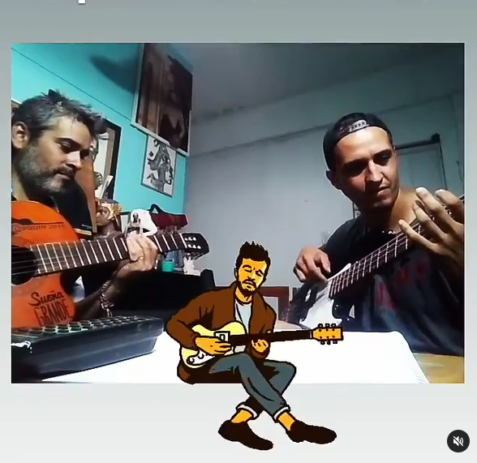
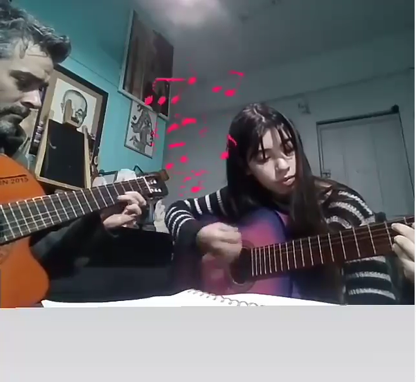
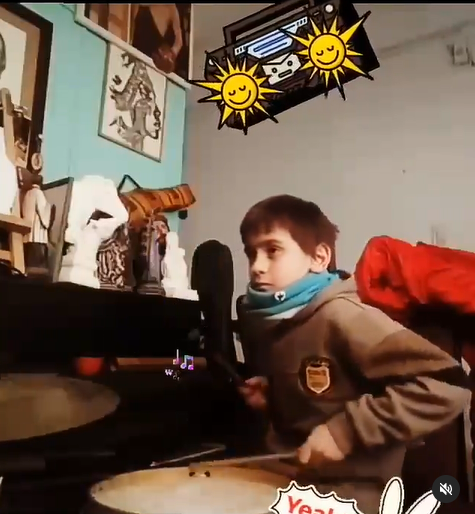
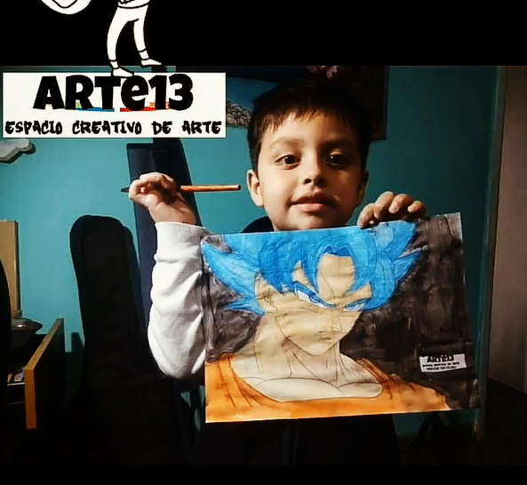

En Arte13, espacio creativo de arte se busca transmitir la enseñanza del arte con un método didáctico, cordial y efectivo acompañando al alumno en este maravilloso mundo del arte en las áreas de:

Dibujo y pintura - Guitarra – Piano – Ukelele – Charango – bajo - percusión (bombo legüero, cajon y batería)

Cuento con más de 20 años de experiencia enseñando a alumnos particulares de todas las edades. Las clases son individuales lo que facilita la total dedicación al alumno en su tiempo de clase

El alumno avanzara rápidamente en la disciplina elegida siguiendo las prácticas y tareas que se le darán en cada clase.